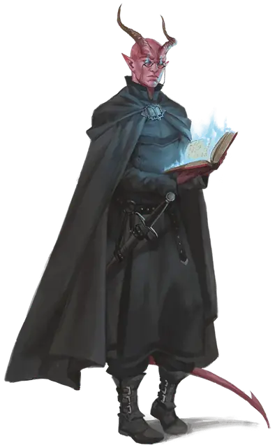

Инквизитор тома
Inquisitor of the Tome
Средний или Маленький Гуманоид, Принципиальный Нейтральный

Класс Защиты 14 Инициатива +1 (11)
Хиты 88 (16к8 + 16)
Скорость 30 футов
| мод | спас | ||
|---|---|---|---|
| СИЛ | 10 | +0 | +0 |
| ЛОВ | 12 | +1 | +1 |
| ТЕЛ | 12 | +1 | +1 |
| мод | спас | ||
|---|---|---|---|
| ИНТ | 19 | +4 | +7 |
| МДР | 16 | +3 | +6 |
| ХАР | 15 | +2 | +5 |
Иммунитеты Испуганный, Очарованный
Чувства пассивное Восприятие 13, Истинное зрение 30 футов
Языки Общий плюс ещё два языка
Опасность 8 (3 900 опыта; БВ +3)
Действия
Мультиатака. Инквизитор совершает три атаки Силовым лезвием. Он может заменить одну из этих атак использованием Сотворения заклинаний (Телекинез или Упругий шар Отилюка), если они доступны.
Силовое лезвие. Бросок рукопашной или дальнобойной атаки: +7, досягаемость 5 фт. или дистанция 120 фт. Попадание: 22 (4к8 + 4) Силового урона. Если цель — существо Большого размера или меньше, оно отталкивается на расстояние вплоть до 10 футов по прямой от инквизитора.
Сотворение заклинаний. Инквизитор тома сотворяет одно из следующих заклинаний, не нуждаясь в компонентах заклинания (заклинательная характеристика — Интеллект, Сл спасброска заклинаний 15):
Неограниченно: Волшебная рука, Невидима, Доспехи мага, Обнаружение магии, Послание, Рассеивание магии
1/день каждое: Телекинез, Упругий шар Отилюка
Бонусные действия
Схлопывание (Перезарядка 4–6). Спасбросок Ловкости: Сл 15, все существа в 20-футовой Сфере с центром в точке, видимой инквизитором в пределах 120 футов. Провал: 27 (6к8) Силового урона, и цель Опрокидывается и притягивается на расстояние вплоть до 20 футов по прямой к центру Сферы. Успех: Только половина урона.
Бонус мастерства +3
Среда обитания Любая
Сокровища Любые
Ульмистские инквизиторы
Ревностные искоренители злых помыслов
«Зло таится повсюду. Силою разума мы отыщем его, проникнем в самую его суть и уничтожим без следа». С этими словами одарённый психической силой жрец Ульмед основал Ульмистскую инквизицию — орден псиоников-дознавателей, стремящихся вскрывать и выжигать зло, гнездящееся в глубинах сердец. Из погрязшего в пороке города Малитейн, что на Материальном плане, инквизиция рассылает своих служителей по всей мультивселенной, дабы противостоять деяниям зловещих культов, кошмарам, попирающим саму действительность, и злу, присущему смертным. Отдельные секты инквизиции действуют и в Доменах Ужаса, работая тайными ячейками или проникая в иные конфессии, например в церковь Эзры.
Ульмистская инквизиция делится на три ордена, носящих имена сподвижников Ульмеда: орден Козимы, орден Анселя и орден Тристиана. Каждый орден владеет собственной псионической силой, и у каждого на гербе — собственный символ. Иные инквизиторы поддерживают дух товарищического соперничество с собратьями из других орденов, но большинство отбрасывают обиды — хотя бы на время — ради совместной борьбы со злом.
Орден Тристиана черпает силу не столько во врождённой магии или отточенных мускулах, сколько в тщательном изучении и наблюдении. Его последователи с помощью телекинетической силы меняют окружающую обстановку, берут врагов в ловушки и сокрушают злодеев. Их символ как учёных инквизиции — гримуар.